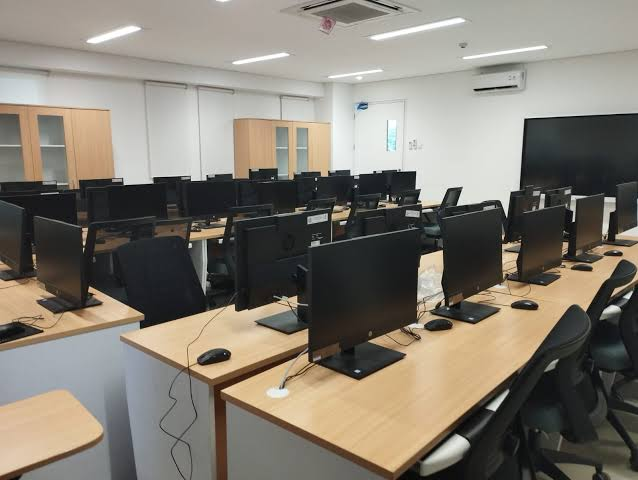
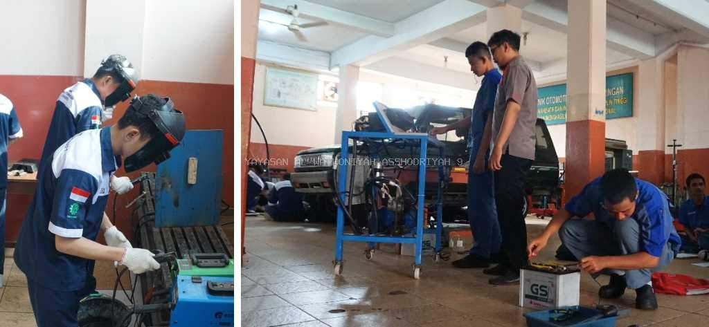
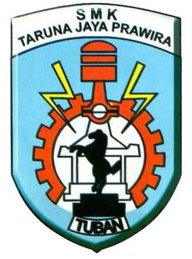

Laboratorium Komputer
Perpustakaan
Bengkel Praktik

.jpg)

|
 |
SMK Taruna Jaya Prawira |
| (THE WINNER) |
SMK Taruna Jaya Prawira (TJP) Tuban merupakan salah satu Sekolah Menengah Kejuruan swasta unggulan yang berlokasi strategis di Jl. Dr. Wahidin Sudirohusodo, Sidorejo, Kabupaten Tuban, Jawa Timur. Dikenal sebagai SMK Rujukan Nasional, sekolah berakreditasi A ini berkomitmen mencetak lulusan yang kompeten dan siap bersaing di Dunia Usaha dan Dunia Industri (DUDI). Guna mendukung visi tersebut, lembaga pendidikan ini menyediakan enam program keahlian yang relevan dengan kebutuhan zaman, yaitu Teknik Pemesinan, Teknik Kendaraan Ringan Otomotif, Teknik Instalasi Tenaga Listrik, Teknik Pengelasan, Teknik Komputer dan Jaringan, serta Rekayasa Perangkat lunak
Sebagai institusi yang adaptif terhadap era industri 4.0, SMKS TJP Tuban rutin menorehkan prestasi gemilang baik di kancah regional maupun internasional. Selain mendominasi perolehan medali emas dalam Lomba Kompetensi Siswa (LKS) tingkat Provinsi Jawa Timur, siswa dari SMK TJP Tuban bahkan sukses meraih penghargaan Medallion of Excellence pada ajang ASEAN TVET Friendly Match di Malaysia. Keberhasilan ini tidak lepas dari lengkapnya sarana prasarana penunjang, seperti ruang praktik modern berstandar industri serta jajaran tenaga pendidik yang profesional di bidangnya.
| No | Program Keahlian | Lama Belajar |
|---|---|---|
| 1 | Rekayasa Perangkat Lunak | 3 Thaun |
| 2 | Teknik Komputer&Jaringan | 3 Tahun |
| 3 | Teknik Kendaraan Ringan | 3 Tahun |
| 4 | Teknik Instalasi Tenaga listrik | 3 Tahun |
| 5 | Teknik Pemesinan | 3 Tahun |
| 6 | Teknik Pengelasan | 3 Tahun |
Laboratorium Komputer |
Perpustakaan |
Bengkel Praktik |
|---|---|---|
 |
|
 |
Alamat Sekolah: Jl.Dr.Wahidin Sudiro Husodo Tuban
Nomor Telepon: (0356) 324379
Email Sekolah: info@smktjp.sch.id
created by M Hafidz Al Haqiqi